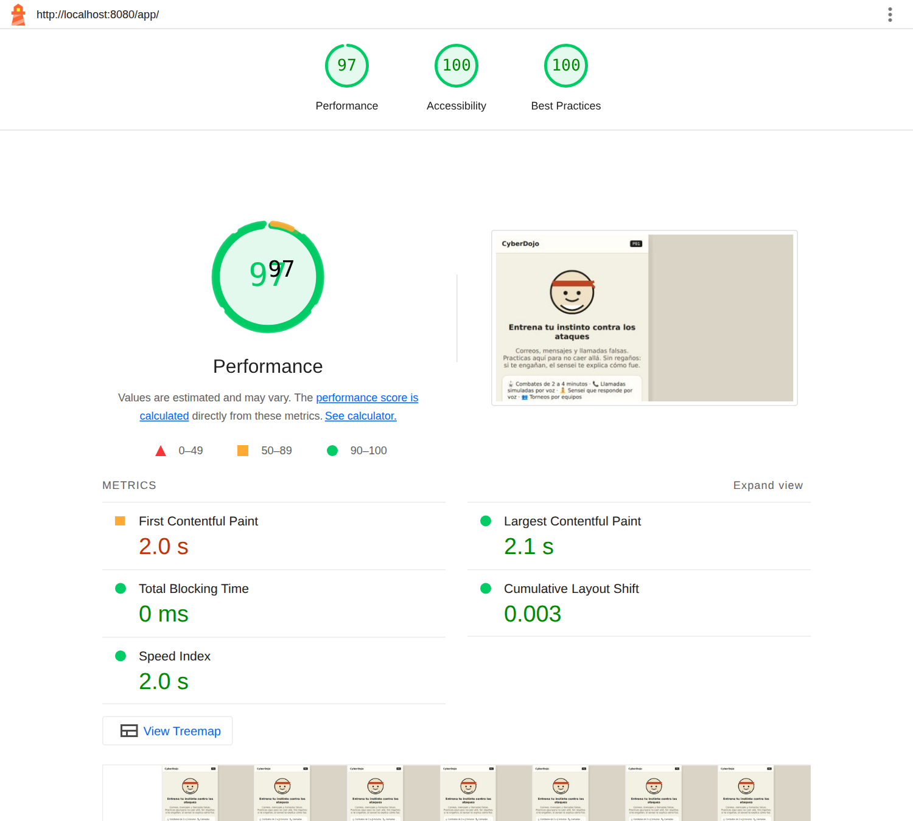
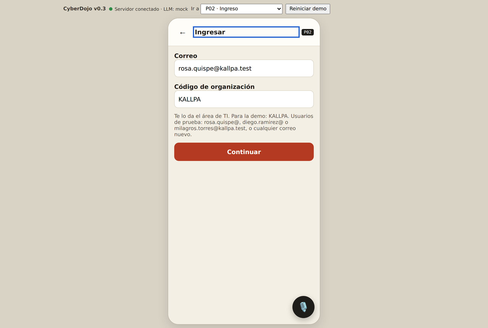
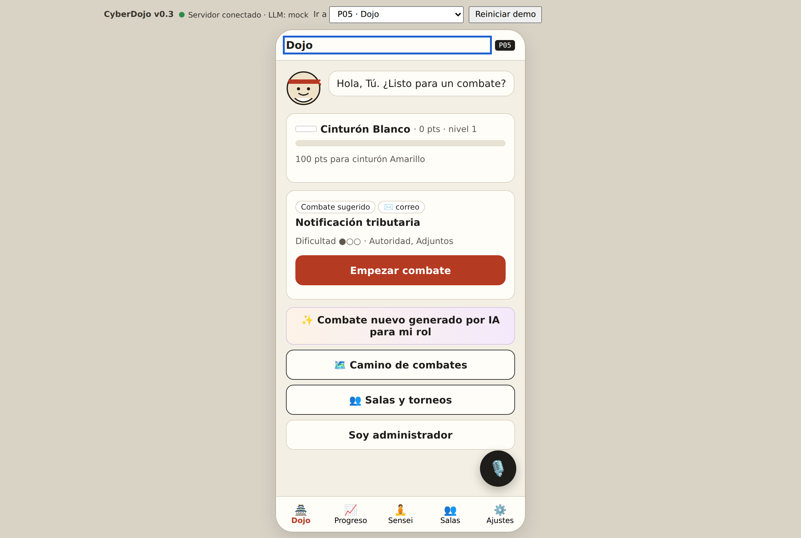
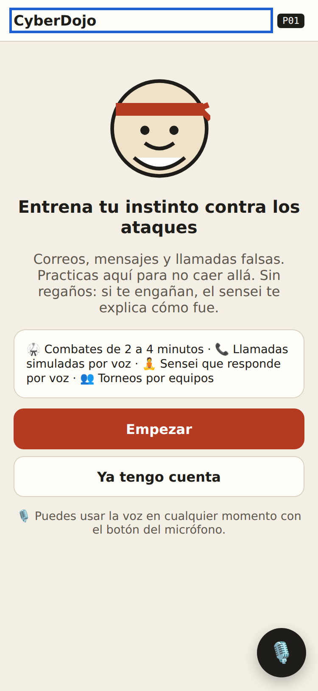
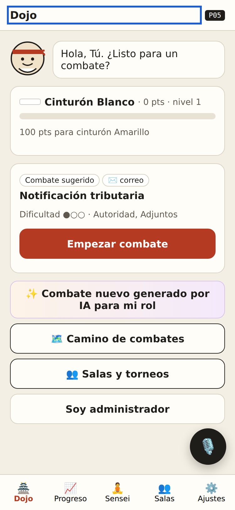
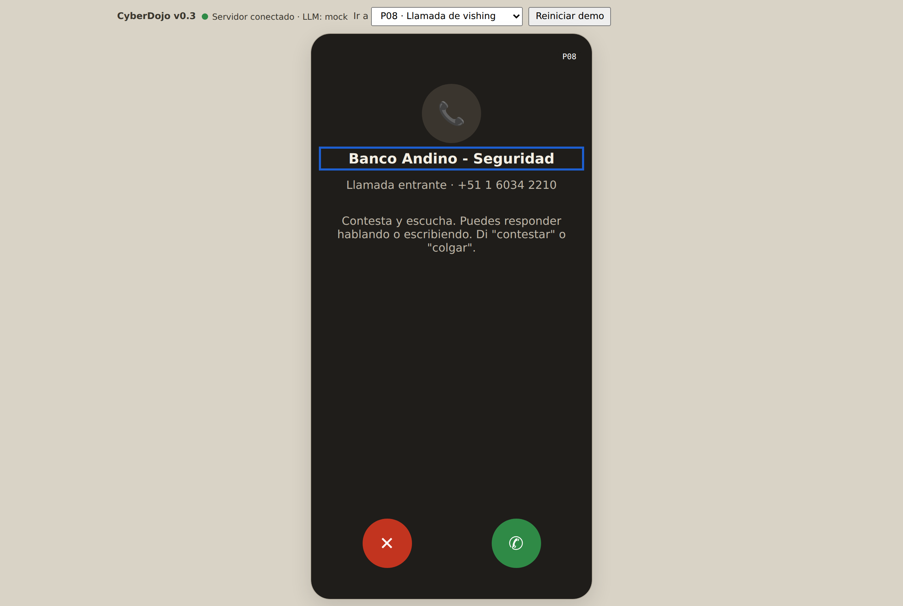
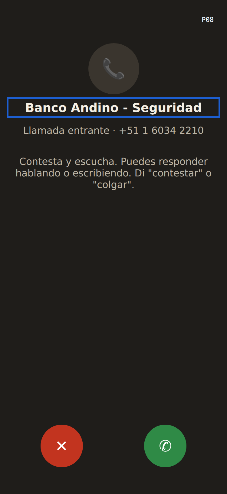
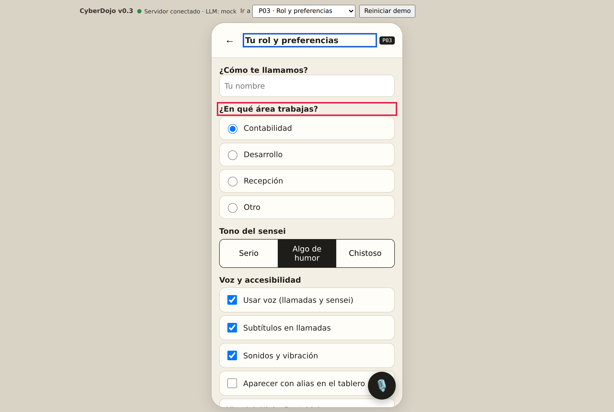

| Alumno | Esau Flores Villar (20151445F) |
| Sitio evaluado | CyberDojo v0.3, PWA de entrenamiento en ciberseguridad por voz y chat, servida en local (http://localhost:8080/app/) |
| Repositorio | github.com/FloresVillar/cc451-IHC-grupo15-cyberdojo |
| Herramientas | Lighthouse 12.2.1 (Chrome 151, emulación móvil), axe-core 4.10.2 (WCAG 2.0/2.1 A y AA y buenas prácticas), Playwright para las capturas |
main ni h1, los encabezados saltan de nivel en la mayoría de pantallas, y el sitio no comprime texto y carga unos 170 KiB de JavaScript evitables. Los dos primeros afectan a usuarios de lector de pantalla, que es justo el público que el proyecto dice atender.Selección del sitio. Se evaluó el prototipo del proyecto (CyberDojo v0.3), levantado con npm start. Criterios: accesibilidad (WCAG 2.1 A/AA), rendimiento, claridad visual y cumplimiento de estándares técnicos.
| Paso | Herramienta | Alcance |
|---|---|---|
| 1 | Lighthouse (Performance, Accessibility, Best Practices) | Pantalla de ingreso, emulación móvil |
| 2 | axe-core inyectado con Playwright | 16 pantallas (P01–P16) × 2 viewports (escritorio 1280×900, móvil 375×812) = 32 escaneos |
| 3 | Cross-browser / móvil | Chromium en escritorio y emulación móvil; revisión de desbordes |

| Oportunidad detectada | Ahorro potencial |
|---|---|
| Habilitar compresión de texto | 88 KiB |
| Reducir JavaScript sin usar | 57 KiB |
| Minificar JavaScript | 15 KiB |
| Reducir CSS sin usar | 10 KiB |
0 violaciones de contraste (color-contrast), 0 críticas o serias, 0 problemas de ARIA y 0 scroll horizontal en móvil. Cuatro reglas de severidad moderada:
| Regla | Qué significa | Escaneos afectados |
|---|---|---|
heading-order | Los niveles de encabezado saltan (h3 sin h2 previo) | 16 de 32 |
region | Contenido fuera de landmarks (barra de demo .presenter) | 18 de 32 |
landmark-one-main | Falta el landmark main (P08) | 2 de 32 |
page-has-heading-one | Falta el h1 (P08) | 2 de 32 |




En Chromium de escritorio y en emulación móvil no se detectó scroll horizontal ni desbordes, y el diseño se adapta al ancho del teléfono. No se probó en Firefox, Safari ni en un dispositivo físico. Dato relevante: la voz usa Web Speech API, que en Firefox no ofrece reconocimiento de voz; ahí aplica el respaldo por texto y botones que el proyecto ya contempla.
El prototipo no tiene fallas graves. Se priorizan los tres hallazgos con más efecto sobre usuarios reales.
main ni h1

| Evidencia | axe: landmark-one-main y page-has-heading-one, en escritorio y móvil. |
| Principio UX | Visibilidad del estado del sistema y consistencia y estándares (Nielsen). Una persona con lector de pantalla no sabe en qué pantalla está ni puede saltar al contenido principal, justo en la pantalla más inmersiva del entrenamiento. |
| Solución | Envolver la vista en <main> y añadir un <h1> («Llamada en curso» o el nombre del atacante simulado), oculto visualmente con la clase sr que ya existe. |

h3 sin h2 previo.| Evidencia | axe: heading-order en 16 de 32 escaneos (P03, P05, P07 y otras). |
| Principio UX | Consistencia y estándares; reconocimiento antes que recuerdo. Los lectores de pantalla recorren la página por encabezados y reciben una estructura confusa. |
| Solución | Un h1 por vista, h2 para secciones y h3 solo dentro de ellas. Es un cambio en las plantillas de app/js/app.js; el aspecto visual se conserva ajustando el CSS por clase. |
| Evidencia | Lighthouse: FCP 2.0 s y LCP 2.1 s (única penalización del 97); uses-text-compression y unused-javascript con puntaje 0. |
| Principio UX | Eficiencia de uso y visibilidad del estado. Es una PWA pensada para celular y redes de empresa, donde 2 s para el primer contenido se nota en conexiones débiles. |
| Solución | Activar gzip/brotli en el servidor (src/server/), minificar app.js y escenarios.js, y cargar con import() las partes no usadas al inicio (voz, torneos, administración). |
Hallazgo menor. La barra de demo («Ir a», «Reiniciar demo») queda fuera de landmarks (region). Es andamiaje del prototipo: basta ponerla en un <nav aria-label="Demo"> o retirarla en producción.
| # | Mejora | Esfuerzo | Efecto |
|---|---|---|---|
| 1 | main + h1 en P08 | Bajo | Accesibilidad para lectores de pantalla |
| 2 | Jerarquía h1 → h2 → h3 en todas las vistas | Bajo | Navegación por encabezados |
| 3 | Compresión, minificado y carga diferida de JS | Medio | −170 KiB; mejor FCP y LCP |
| 4 | Barra de demo dentro de un landmark | Bajo | Limpia el informe de axe |
| 5 | Probar en Firefox, Safari y celular real | Medio | Cierra el cross-browser pendiente |
localhost; el rendimiento real depende del despliegue.